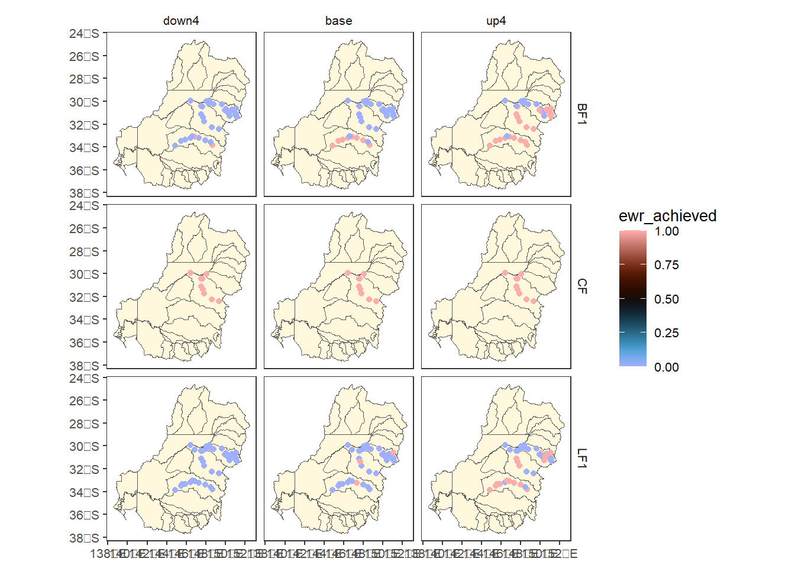
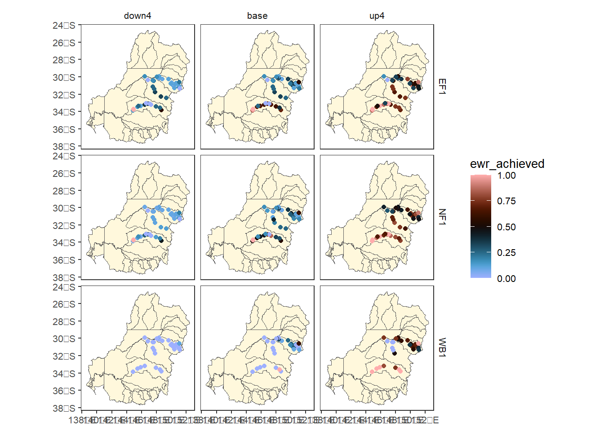
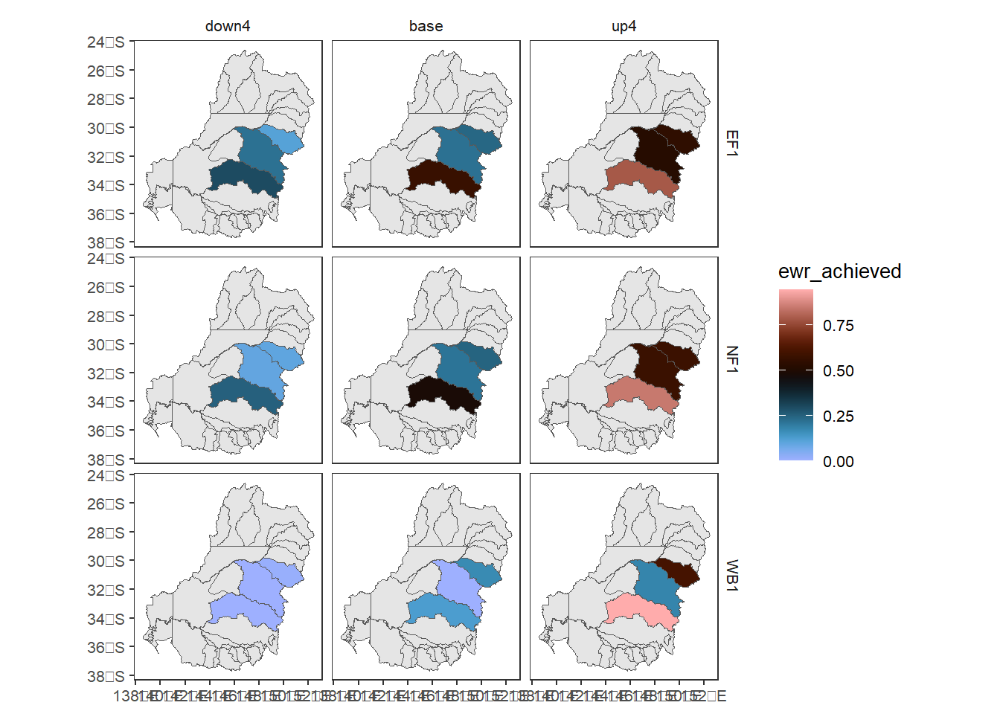
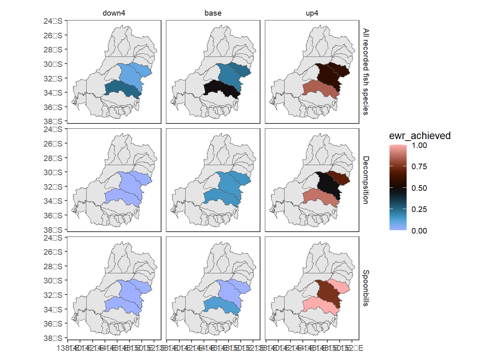
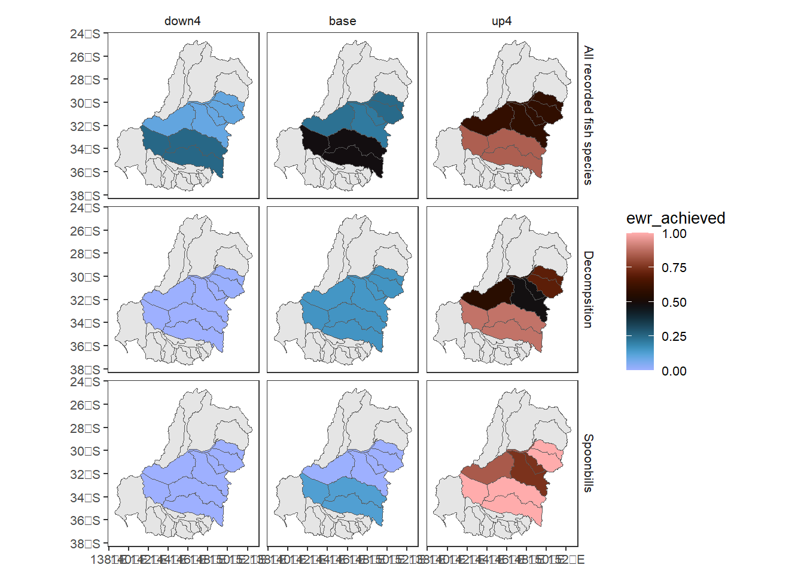
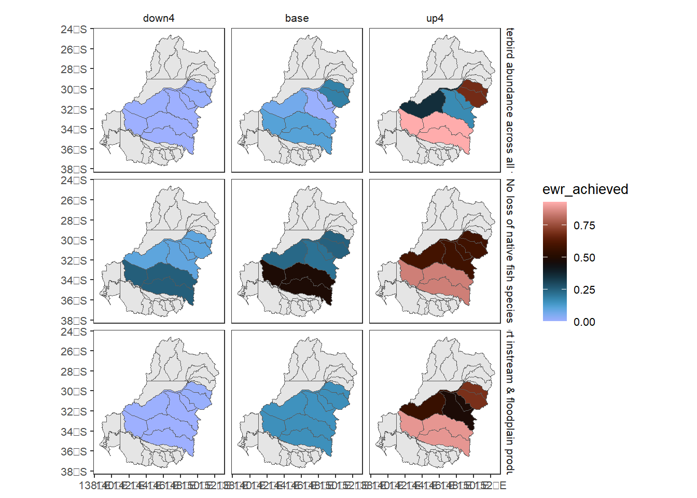
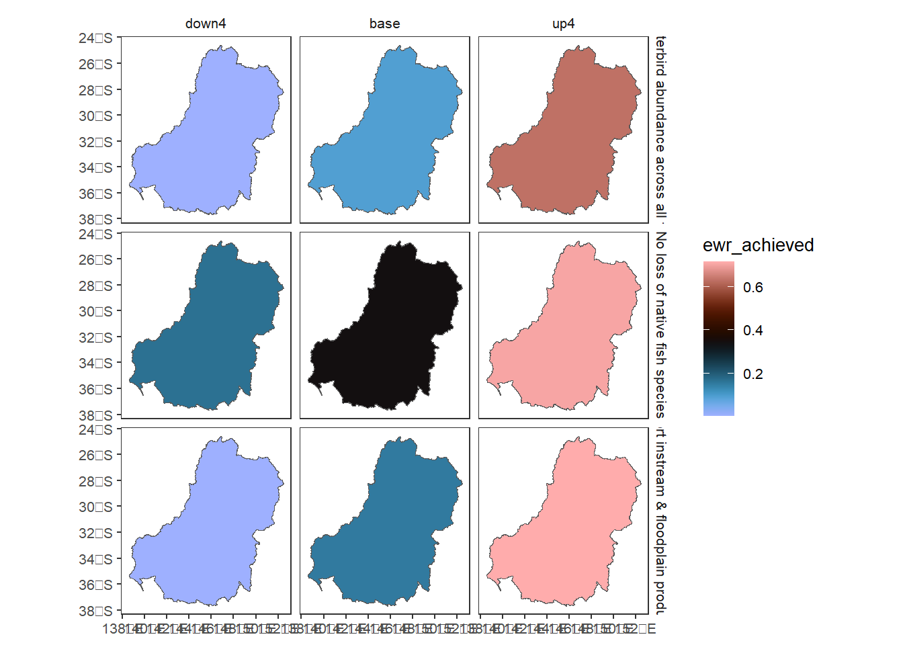
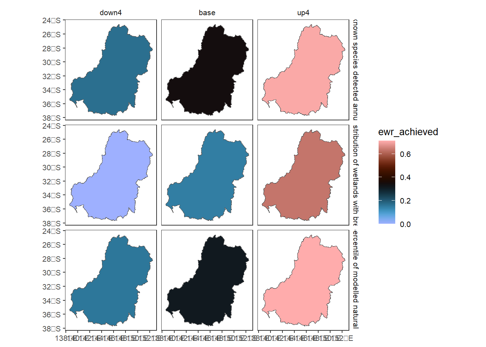

Aggregate Theme Space
Overview
We have theme aggregation and spatial aggregation shown separately for in-depth looks at their meaning and capability. Here, we focus on the typical use-case of interleaved aggregation along multiple dimensions. We do not get into all the different options and syntax as they are covered in those other documents.
All aggregation in {werptoolkitr} operate on the same core function and use similar principles- take a list of aggregation sequences, and aggregate each step according to a list of aggregation functions. Here, we show how multi_aggregate allos us to interleave the dimensions along which we aggregate, including auto-detecting which dimension we’re operating on (though that is fragile).
Fundamentally, multi_aggregate wraps theme_aggregate and spatial_aggregate with some data organisation and tracking of what the previous level of aggregation was to maintain proper grouping as they alternate. Both of those, in turn, wrap general_aggregate with some data arrangement specific to the dimension they aggregate along, such as stripping and re-adding geometry.
For inputs, multi_aggregate expects the incoming data to be in memory and geographic, and prefers (but does not require) the edges defining theme relationships to be already calculated. There is also a wrapper read_and_agg that takes paths as arguments and does the read-in of the data internally, finds the edges, and then runs multi_aggregate. This is often a useful approach, allowing parallelisation, better memory management, and it is far easier to use paths in a config file of arguments.
Demonstration setup
First, we need to provide a set of paths to point to the input data, in this case the outputs from the EWR tool for the small demonstration, created by a controller notebook. Spatial units could be any arbitrary polygons, but we use those provided by {werptoolkitr} for consistency, which also provides the spatial locations of the gauges in bom_basin_gauges.
Where do we want the outputs to go? The multi_aggregate function we focus on here takes R objects as inputs and returns a dataframe or a list back to the session. But in practice, we will wrap that with read_and_agg, which takes paths as inputs and can both return R objects to the session returnList = TRUE and save to a file if savepath = "path/to/outfile" . The aggregator_output directory is not broken into module subdirectories, since it is possible we will want to aggregate across modules at the highest levels.
out_path <- file.path(project_dir, 'aggregator_output')Scenario information
This will be attached to metadata, typically. For now, I’m just using it for diagnostic plots and the demonstration data is simple, so make it here.
Data prep
To make the actual multi-aggregate loop general and only do one thing, dataprep needs to happen first (e.g. we don’t want to do EWR-specific dataprep on econ data). That said, we can use read_and_agg, which takes paths and the aggregation lists and runs the dataprep and aggregation functions. At present, the EWR tool is the only module, so we read it in and prep the data, including making it geographic with gauge locations.
ewrdata <- prep_ewr_agg(ewr_results, type = 'summary', geopath = bom_basin_gauges)We use causal_ewrs for causal relationships and spatial layers provided by {werptoolkitr} to define the aggregation units.
Setup
First, we specify a simple interleaved aggregation sequence with only one aggregation function applied per step for simplicity. Note that theme-axis aggregation steps are specified with a character vector c('level_from', 'level_to'), while spatial aggregation steps are specified with an sf object (polygons). Allowing specification of spatial steps by character instead of object is high on the priority list. Here, we specify the aggregation function sequence with a mixture of character names for functions and list-defined anonymous functions, as discussed in the syntax notebook.
Naming the list by target makes tracking and interpretation much easier, and is highly recommended.
Spatial aggregation should almost always be area-weighted after the data is in polygons (see spatial notebook), though there are some aggregation functions where it doesn’t matter (e.g. max). All polygon data has an area column calculated automatically for this reason. The first aggregation into polygons doesn’t need to be area-weighted, because the thing being aggregated (typically at the gauge scale) doesn’t have area. After that, all data is in polygons and so has area. It is likely safest to always use weighted functions like weighted.mean though, since they default to even weights if none are given.
aggseq <- list(ewr_code = c('ewr_code_timing', 'ewr_code'),
env_obj = c('ewr_code', "env_obj"),
sdl_units = sdl_units,
Specific_goal = c('env_obj', "Specific_goal"),
catchment = cewo_valleys,
Objective = c('Specific_goal', 'Objective'),
mdb = basin,
target_5_year_2024 = c('Objective', 'target_5_year_2024'))
funseq <- list(c('CompensatingFactor'),
c('ArithmeticMean'),
c('ArithmeticMean'),
c('ArithmeticMean'),
list(wm = ~weighted.mean(., w = area,
na.rm = TRUE)),
c('ArithmeticMean'),
list(wm = ~weighted.mean(., w = area,
na.rm = TRUE)),
c('ArithmeticMean'))The multi_aggregate function needs the edges, so calculate them just for the theme sequence (dropping the spatial steps). This can also happen automatically in multi_aggregate and, most importantly, read_and_agg, allowing us to run the code only by specifying parameters and without this sort of intermediate processing.
themeseq <- aggseq[purrr::map_lgl(aggseq, is.character)]
ewr_edges <- make_edges(dflist = causal_ewr,
fromtos = themeseq)Aggregate
Now we do the aggregation. Note that we have been very aggressive in handling spatial processing and so while spatial processing is slow, we minimize it as much as possible internally.
Return only final
tsagg <- multi_aggregate(dat = ewrdata,
causal_edges = ewr_edges,
groupers = 'scenario',
aggCols = 'ewr_achieved',
aggsequence = aggseq,
funsequence = funseq)That saves only the final outcome, which is far cheaper for memory, but doesn’t say how we got that answer.
tsaggReturn all steps
Most often, we’ll want to save the list of outcomes at each step- it allows us to see how we got the final outcome, and it’s likely we’re interested in the outcomes at more than one step anyway. As in the theme notebook, we do this with saveintermediate = TRUE. We also set namehistory = FALSE to put the aggregation tracking in columns instead of names for ease of handling the output.
allagg <- multi_aggregate(dat = ewrdata,
causal_edges = ewr_edges,
groupers = 'scenario',
aggCols = 'ewr_achieved',
aggsequence = aggseq,
funsequence = funseq,
saveintermediate = TRUE,
namehistory = FALSE,
keepAllPolys = FALSE)Now, we’ll inspect each step, both as dataframes and maps. There are many other ways of plotting the outcome data available in the comparer. The goal here is simply to visualize what happens at each step along the way, so we make some quick maps.
Sheet 1- raw data from ewr
This is just the input data, so we don’t bother plotting it.
allagg$ewr_code_timingSheet 2- ewr_code
The first aggregated level is in sheet 2, and has the code_timings aggregated to ewr_code.
allagg$ewr_codeThere are many EWR codes, so just pick three haphazardly (LF1, BF1, and CF) and plot to see that this data is at the gauge scale.
allagg$ewr_code |>
dplyr::filter(ewr_code %in% c('LF1', 'BF1', 'CF')) %>%
dplyr::left_join(scenarios) %>%
plot_outcomes(y_col = 'ewr_achieved',
x_col = 'map',
colorgroups = NULL,
colorset = 'ewr_achieved',
pal_list = list('scico::berlin'),
facet_col = 'scenario',
facet_row = 'ewr_code',
scene_pal = scene_pal,
sceneorder = c('down4', 'base', 'up4'),
underlay_list = list(underlay = sdl_units,
underlay_pal = 'cornsilk'))
Sheet 3- env_obj
Sheet three has now been aggregated to the env_obj on the theme scale, still gauges spatially.
allagg$env_objAgain choosing three of the first codes, we see this is still gauged.
allagg$env_obj |>
dplyr::filter(env_obj %in% c('EF1', 'WB1', 'NF1')) %>%
dplyr::left_join(scenarios) %>%
plot_outcomes(y_col = 'ewr_achieved',
x_col = 'map',
colorgroups = NULL,
colorset = 'ewr_achieved',
pal_list = list('scico::berlin'),
facet_col = 'scenario',
facet_row = 'env_obj',
scene_pal = scene_pal,
sceneorder = c('down4', 'base', 'up4'),
underlay_list = list(underlay = sdl_units,
underlay_pal = 'cornsilk'))
Sheet 4- sdl_units
The fourth step is a spatial aggregation of env_obj theme-level data into sdl_units. This stays at the env_obj theme scale but aggregates the gauges into sdl units.
allagg$sdl_unitsNow we have aggregated the data above into sdl polygons.
allagg$sdl_units |>
dplyr::filter(env_obj %in% c('EF1', 'WB1', 'NF1')) %>%
dplyr::left_join(scenarios) %>%
plot_outcomes(y_col = 'ewr_achieved',
x_col = 'map',
colorgroups = NULL,
colorset = 'ewr_achieved',
pal_list = list('scico::berlin'),
facet_col = 'scenario',
facet_row = 'env_obj',
scene_pal = scene_pal,
sceneorder = c('down4', 'base', 'up4'),
underlay_list = list(underlay = sdl_units,
underlay_pal = 'grey90'))
Sheet 5- Specific goal
Sheet 5 is back to the theme axis, aggregating env_obj to Specific goal, remaining in SDL units.
allagg$Specific_goalUsing fct_reorder. this is where info about the scenarios would come in handy as reorder cols.
allagg$Specific_goal |>
dplyr::filter(Specific_goal %in% c('All recorded fish species',
"Spoonbills",
"Decompsition")) %>%
dplyr::left_join(scenarios) %>%
plot_outcomes(y_col = 'ewr_achieved',
x_col = 'map',
colorgroups = NULL,
colorset = 'ewr_achieved',
pal_list = list('scico::berlin'),
facet_col = 'scenario',
facet_row = 'Specific_goal',
scene_pal = scene_pal,
sceneorder = c('down4', 'base', 'up4'),
underlay_list = list(underlay = sdl_units,
underlay_pal = 'grey90'))
Sheet 6- Catchment
Sheet 6 (aggregation step 5) remains at the Specific goal theme scale, and aggregates spatially from SDL unit into catchment (cewo_valleys). This is a bit of a contrived aggregation, since these are at similar spatial scales but represent different spatial groupings, but it is a good test of spatial aggregation of nonnested spatial units. This is explored in more detail in the spatial notebook.
allagg$catchmentNow we can see that the aggregation has occurred into a different set of polygons. In practice, this we would likely aggregate gauge-scale data into either sdl_units or cewo_valleys, depending on the target, but this demonstrates the capability and flexibility of the multistage aggregations.
allagg$catchment |>
dplyr::filter(Specific_goal %in% c('All recorded fish species',
"Spoonbills",
"Decompsition")) %>%
dplyr::left_join(scenarios) %>%
plot_outcomes(y_col = 'ewr_achieved',
x_col = 'map',
colorgroups = NULL,
colorset = 'ewr_achieved',
pal_list = list('scico::berlin'),
facet_col = 'scenario',
facet_row = 'Specific_goal',
scene_pal = scene_pal,
sceneorder = c('down4', 'base', 'up4'),
underlay_list = list(underlay = cewo_valleys,
underlay_pal = 'grey90'))
Sheet 7- Objective
We are now back to aggregation along the theme axis (from Specific goal to Objective), remaining in cewo_valleys.
allagg$ObjectiveWe see that these are still in the catchments, but now the values are different Objectives.
allagg$Objective |>
dplyr::filter(Objective %in% c('No loss of native fish species',
"Increase total waterbird abundance across all functional groups",
"Support instream & floodplain productivity")) %>%
dplyr::left_join(scenarios) %>%
plot_outcomes(y_col = 'ewr_achieved',
x_col = 'map',
colorgroups = NULL,
colorset = 'ewr_achieved',
pal_list = list('scico::berlin'),
facet_col = 'scenario',
facet_row = 'Objective',
scene_pal = scene_pal,
sceneorder = c('down4', 'base', 'up4'),
underlay_list = list(underlay = sdl_units,
underlay_pal = 'grey90'))
Sheet 8- Basin
This step is a spatial aggregation to the basin scale, with theme remaining at the Objective level. The scaling to the basin is area-weighted, so larger catchments count more toward the basin-scale outcome. Recognize that for this situation with data in only a subset of the basin, aggregation to the whole basin is fraught and is likely biased by missing data.
allagg$mdbWe drop the underlay on the plots since we’re now plotting the whole basin
allagg$mdb |>
dplyr::filter(Objective %in% c('No loss of native fish species',
"Increase total waterbird abundance across all functional groups",
"Support instream & floodplain productivity")) %>%
dplyr::left_join(scenarios) %>%
plot_outcomes(y_col = 'ewr_achieved',
x_col = 'map',
colorgroups = NULL,
colorset = 'ewr_achieved',
pal_list = list('scico::berlin'),
facet_col = 'scenario',
facet_row = 'Objective',
scene_pal = scene_pal,
sceneorder = c('down4', 'base', 'up4'))
Sheet 9- 5-year targets
Finally, we aggregate along the theme axis to 5-year targets, remaining at the basin-scale spatialy
allagg$target_5_year_2024And we’re still at the basin, just plotting different outcomes.
allagg$target_5_year_2024 |>
dplyr::filter(target_5_year_2024 %in% c('All known species detected annually',
"Establish baseline data on the number and distribution of wetlands with breeding activity of flow-dependant frog species",
"Rates of fall does not exceed the 5th percentile of modelled natural rates during regulated water deliveries")) %>%
dplyr::left_join(scenarios) %>%
plot_outcomes(y_col = 'ewr_achieved',
x_col = 'map',
colorgroups = NULL,
colorset = 'ewr_achieved',
pal_list = list('scico::berlin'),
facet_col = 'scenario',
facet_row = 'target_5_year_2024',
scene_pal = scene_pal,
sceneorder = c('down4', 'base', 'up4'))
Simple inputs and saving
In practice, we often won’t call multi_aggregate directly, but will use read_and_agg to run multi_aggregate, since it automates data read-in and processing and saving. To do the same analysis as above but using read_and_agg, we give it the path to the data instead of the data itself. Note also that the geopath and causalpath arguments can be objects or paths; we use objects here because they are provided with the {werptoolkitr} package. We use returnList to return the output to the active session, and savepath to save an .rds file to out_path (but only if we’re rebuilding data).
Note- to readRDS sf objects produced here, we need to have sf loaded in the reading script.
if (REBUILD_DATA) {savep <- file.path(out_path)} else {savep <- NULL}
ts_from_raa <- read_and_agg(datpath = ewr_results,
type = 'summary',
geopath = bom_basin_gauges,
causalpath = causal_ewr,
groupers = c('scenario'),
aggCols = 'ewr_achieved',
aggsequence = aggseq,
funsequence = funseq,
namehistory = FALSE,
saveintermediate = TRUE,
returnList = TRUE,
savepath = savep)Warning: attribute variables are assumed to be spatially constant throughout all
geometries
Warning: attribute variables are assumed to be spatially constant throughout all
geometriesWe can see that that produces the same list as tsagg
names(tsagg) [1] "scenario"
[2] "polyID"
[3] "target_5_year_2024"
[4] "target_5_year_2024_ArithmeticMean_mdb_wm_Objective_ArithmeticMean_catchment_wm_Specific_goal_ArithmeticMean_sdl_units_ArithmeticMean_env_obj_ArithmeticMean_ewr_code_CompensatingFactor_ewr_achieved"
[5] "OBJECTID"
[6] "DDIV_NAME"
[7] "AREA_HA"
[8] "SHAPE_AREA"
[9] "SHAPE_LEN"
[10] "geometry" names(ts_from_raa)[1] "ewr_code_timing" "ewr_code" "env_obj"
[4] "sdl_units" "Specific_goal" "catchment"
[7] "Objective" "mdb" "target_5_year_2024"Parallelization
The theme notebook, demonstrates potential parallelisation over gauges and scenarios from read-in onwards, which will likely be very useful once we’re dealing with real scenarios. Once spatial aggregation occurs, parallelisation over gauges doesn’t work, since their outcomes need to be aggregated together. That means in general, we are likely to run parallelisation over just scenarios, although there is certainly scope for clever chunking to allow parallelisation over space and time as well if that becomes necessary.
Note: if we want to saveintermediate = TRUE, which we often do, we can’t .combine = bind_rows, but would need to save a list of lists and then bind_rows at each list-level post-hoc with purrr. I have not established that as a function yet, but it is high priority as we settle on data formats and batching workflows.
library(foreach)
library(doFuture)
registerDoFuture()
plan(multisession)
# plan(sequential) # debug
# get these from elsewhere, the whole point is to not read everything in. Should be able to extract from the paths (or the scenario metadata - better)
allscenes <- list.files(ewr_results, recursive = TRUE) %>%
dirname() %>%
dirname() %>%
unique()
# I think no longer needed now we have a package
# passfuns <- unique(unlist(funseq))
# passfuns <- unlist(passfuns[purrr::map_lgl(passfuns, is.character)])
parAgg <- foreach(s = allscenes,
.combine = dplyr::bind_rows) %dopar% {
read_and_agg(datpath = ewr_results, type = 'summary',
geopath = bom_basin_gauges,
causalpath = causal_ewr,
groupers = c('scenario'),
aggCols = 'ewr_achieved',
aggsequence = aggseq,
funsequence = funseq,
namehistory = TRUE,
saveintermediate = FALSE,
scenariofilter = s)
}
parAggThat output is the same as tsagg, but now it’s been read-in and processed in parallel over scenarios. As in the theme situation, this toy example is slower, but should yield large speedups for larger jobs.
Next steps
We can now proceed to the comparer. We could use the tsagg list directly if we want to do all this processing in a single session, but what is more likely is that we’ll read the data produced by read_and_agg and saved at out_path to read in to the comparer, so we do not have to re-run the aggregator every time we use the comparer.